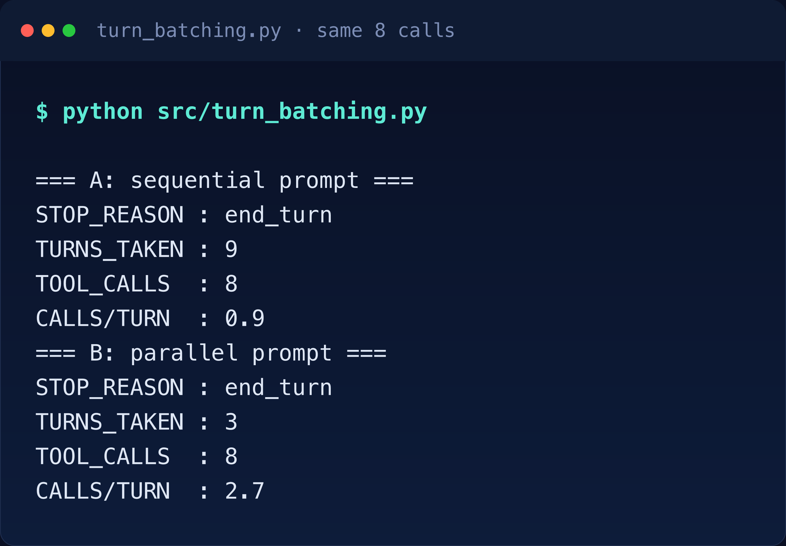
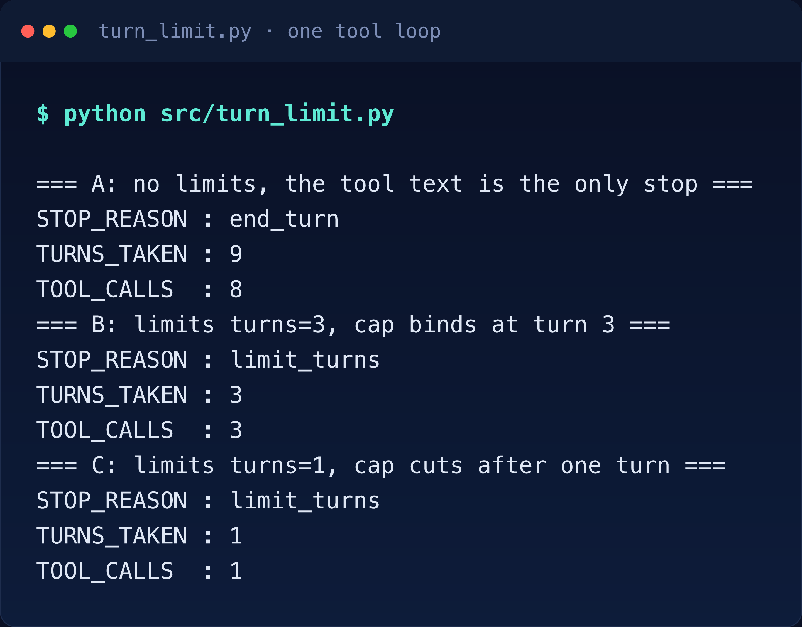
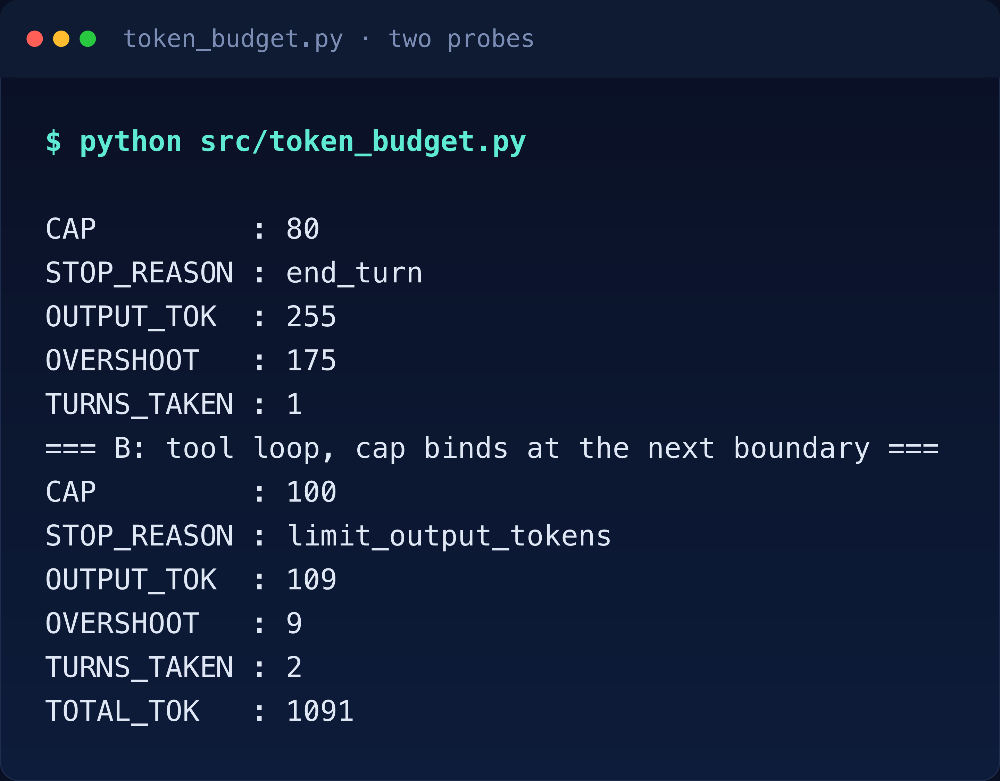
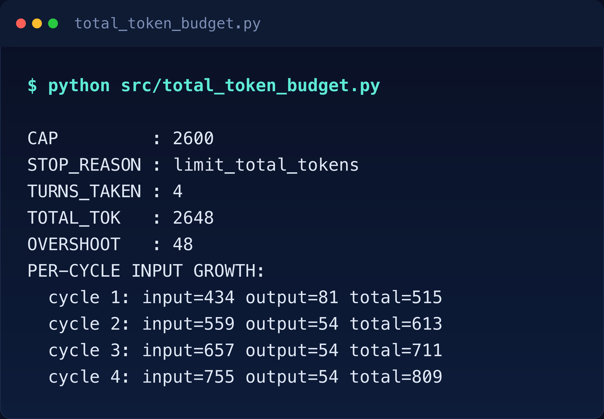
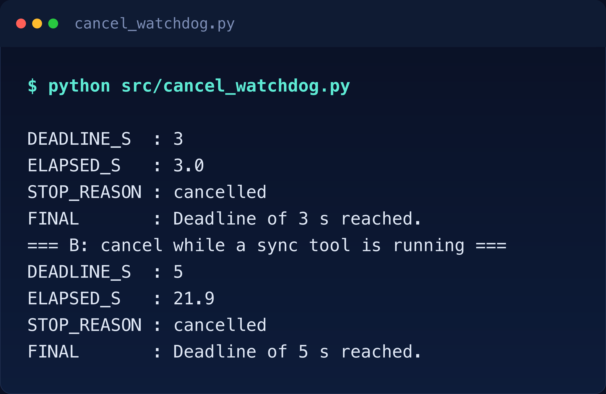
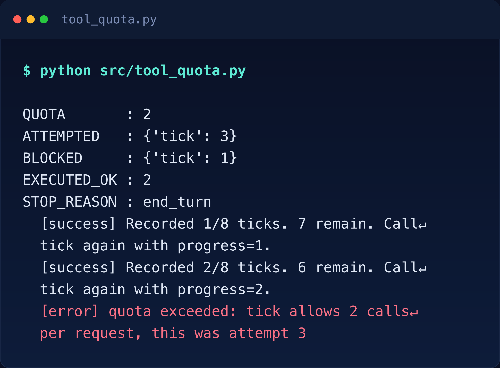
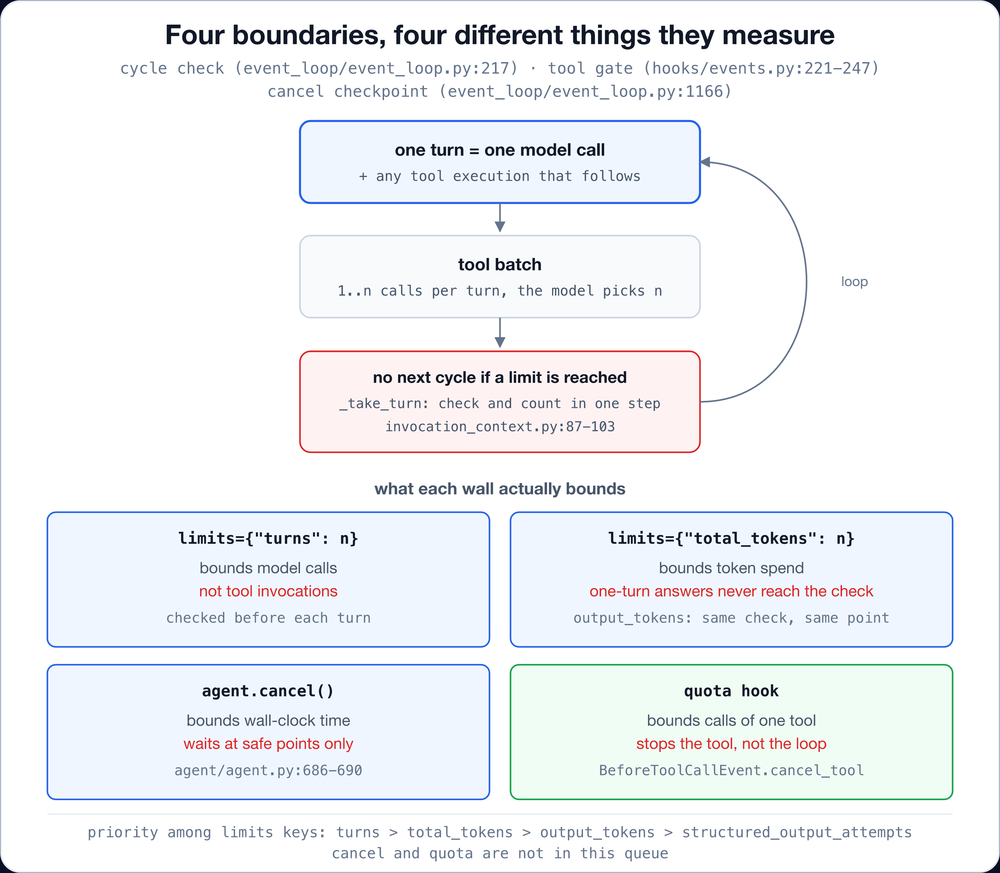

Verified on 2026-11-05 against
strands-agents1.63.0, Python 3.11 and Bedrock inus-east-1. Every number below came out of a run, and the setup steps live inREADME.md. The model isamazon.nova-pro-v1:0on Amazon Bedrock.
Article 01 walked one cycle and counted thirteen stop reasons. Four of them start with limit_: limit_turns, limit_output_tokens, limit_total_tokens and limit_structured_output_attempts. That post treated them as outcomes. This one is about how to cause them, and about how little each boundary guarantees once you look at what it measures. Read 01 first; everything here starts one level up, at the configuration you pass to a single call.
Here is a tool that asks to be called again. It records one tick of a batch job, then reports how many remain.
from strands import Agent, tool
from strands.models import BedrockModel
@tool
def tick(progress: int) -> str:
"""Record one tick of a batch job.
Args:
progress: how many ticks were already recorded before this call.
Returns:
The total recorded so far and how many remain in the batch.
"""
done = min(progress + 1, 8)
remaining = 8 - done
if remaining > 0:
return f"Recorded {done}/8 ticks. {remaining} remain. Call tick again with progress={done}."
return f"Recorded {done}/8 ticks. Batch complete."Run an agent on it with no limits and the loop finishes after 9 turns and 8 tool calls, at end_turn. The ninth turn is the final answer, the one with no tool call in it. The reason it stopped is the last line of the tool output: the batch was complete. Nothing in the SDK decided that. If the tool had kept asking for another call, the loop would have kept serving it.
That is the shape of the problem. An agent is a loop whose exit condition is a sentence the model reads, which is why four walls exist to replace that sentence with something you control. Two of them come from keys in the limits dict below: turns and the two token budgets. Two live outside it: a deadline is a manual agent.cancel() call, and a quota is a hook. structured_output_attempts is a fourth key in the same dict. It caps how many failed attempts at a structured response a request may accumulate (types/agent.py:185), so it stays out of this article.
agent(prompt, limits={"turns": 3, "total_tokens": 20000})The rest of this article is one section per boundary, because each one bounds something different from what its name suggests.
The type definition answers this in one line: a turn is “one model call plus any tool execution that follows” (types/agent.py:177-178). So a turn limit counts model calls. It does not count tool calls, and the gap between the two is decided by the model, not by you.
Two runs make the gap visible. Same tool, same eight calls, two prompts. A prompt that asks for one call at a time produces nine turns over eight calls. A prompt that permits several calls in one response produces three turns over the same eight calls.

A turns cap of 3 would have allowed the second run to finish its work and cut the first one off after three of them. The cap was identical. What it protected was not.
So the cap itself is exact when it fires. With turns=3, the loop stops with limit_turns after three turns and three calls. With turns=1 it stops after one turn and one call, and the run ends without a summary. A cycle runs in a fixed order: check the limits, call the model, run the tools it asked for. The check sits at the top of that cycle, before the model call. That placement is what lets the source promise something useful. A cap that fires at the next cycle’s top fires after the previous turn’s tools completed. agent.messages also stays valid for another call, with no assistant message left pointing at tool calls that never ran (types/agent.py:168-169, event_loop/event_loop.py:217).

In short, the practical reading is uncomfortable. A turn limit is a budget on model calls. If your cost driver is tool invocations, this wall is in the wrong place.
output_tokens and total_tokens look like the answer to that problem. They are documented as soft limits, and the docstring is blunt about why: a single oversized response can overshoot, more so when nested calls run in parallel (types/agent.py:179-186).
The softness is larger than that sentence suggests, because both limits are checked in the same place as the turn cap, at a cycle boundary. A call that answers in one turn never reaches a boundary after the model speaks, so the check never sees the tokens it produced.
One probe makes it concrete. An eighty-token output cap on a single-turn answer. The run produces 255 output tokens and stops with end_turn, because a plain answer ends the loop before the check comes round again. The cap was not enforced. Its only comparison happened before the model spoke, against zero tokens.

Put a hundred-token cap on a loop and it binds, late but visibly. That cap stops the tick loop with limit_output_tokens at 109 tokens, nine past the line, on the second turn. That overshoot is one part of one response, which is why the price of checking between turns is paid inside them.
Total tokens compound faster, because every model call re-reads the whole conversation. In the same tick loop the input per cycle climbs 434, 559, 657, 755. Four cycles spend 2,648 tokens against a 2,600 cap and stop with limit_total_tokens. That total is 2,405 input plus 243 output. The cap was set on total spend and the growth curve is what pushed through it.

In other words, if you need a hard ceiling on one response, the limits dict you pass to agent() is the wrong tool. The model’s own max_tokens (a BedrockModel parameter) caps a single call. Those limits check a conversation, and they check it one boundary late.
Wall-clock time is the boundary people assume is absolute. It is the most cooperative of the four. There is also no time key in the limits dict: a deadline is a timer thread you own that calls agent.cancel(). Here that thread is a watchdog.
Two probes, same agent.cancel(), different phases of the loop. In the first, the watchdog cancels three seconds into a long answer. Streaming is a cancellation safe point, so the call returns in 3.0 seconds with stop_reason set to cancelled and the cancel message as the final assistant message.
In the second, the watchdog fires five seconds into a tool that sleeps twenty seconds. The tool keeps sleeping. The call returns after 21.9 seconds, still cancelled, still carrying the message. The deadline was five seconds. The observed latency was more than four times that.

The source lists the safe points: during model response streaming, before tool execution, during MCP tool execution, after tool execution and before the next model call (agent/agent.py:686-690). A running synchronous tool is not on that list. Cancellation there means the agent stops as soon as control comes back.
So a deadline is only as good as the code under it. Record the deadline when the call starts and have the tool check time.monotonic() against it or hand it to the timeout parameter of the HTTP client, database driver or subprocess. Without that, the wall you built has a door in it. The cancel message is worth using too: it becomes the text the caller sees, which beats a generic timeout error.
Taken together, none of the three boundaries above can enforce a count on how often one tool runs inside a single turn. The turn cap counts model calls, the token caps count tokens, and the deadline only stops tools that have not started yet: one already running keeps the loop waiting until it returns. A tool with side effects needs its own wall.
The SDK exposes one through hooks. A BeforeToolCallEvent callback fires before each tool call and can set cancel_tool, which turns that call into a tool result with error status (hooks/events.py:221-247). Count the calls yourself and stop at your number.
from collections import defaultdict
from strands.hooks import BeforeToolCallEvent
attempted = defaultdict(int) # one dict per request: reset it if you reuse the agent
def quota(event: BeforeToolCallEvent) -> None:
name = event.tool_use["name"]
attempted[name] += 1
if attempted[name] > 2:
event.cancel_tool = (
f"quota exceeded: {name} allows 2 calls per request, "
f"this was attempt {attempted[name]}"
)
agent.add_hook(quota, BeforeToolCallEvent)With a quota of two on the tick tool, the run makes three attempts: two execute, one is blocked, and the model reads the error and changes its answer. It reports two ticks recorded and explains the limit back to the caller. The loop then ends with end_turn.

That last detail matters for how you place this wall, because the quota stops the tool, not the invocation. The model keeps its turn, sees a failure and decides what to do. For a payment API or a shell command, that is the right shape: the model gets a clear refusal it can reason about, and the loop is not killed mid-thought.
Because all four limits checks run at the same cycle boundary, reaching several at once is the normal case rather than a rare one. The stop reason then follows a fixed order: turns first, then total_tokens, then output_tokens, then structured_output_attempts (agent/invocation_context.py:229-262). Cross both turns and total_tokens in one cycle and the run reports limit_turns only. Each check maps to its own limit_* reason in the stop set (types/event_loop.py:42-74).

Misconfiguration is caught before any of this runs. The limits payload is validated when the request starts: unknown keys raise TypeError with the accepted key list in the message, while zero, boolean and non-integer values raise TypeError with the offending key and value (agent/invocation_context.py:160-181). Three payloads, three errors, zero model calls:
TypeError: limits keys ['tuns'] are not recognized limits, expected one of 'turns', 'output_tokens', 'total_tokens', 'structured_output_attempts'
TypeError: limits['turns'] must be a positive int, got 0
TypeError: limits['turns'] must be a positive int, got TrueA typo in a limit name is the worst kind of boundary bug when nothing validates it, because the call succeeds and the wall is simply absent. Validation closes that hole.
The official production guide links its tool quota advice to a “Limit Tool Counts” section of the hooks page. That anchor does not exist. The page has tool interception but no quota example, so the mechanism is real while the documented pattern is missing. The hook in the section above is built from BeforeToolCallEvent.cancel_tool and verified by a run.
My first pass at these experiments ran on deepseek.v3.2, the model from Articles 01 and 02. It failed in a way worth reporting. Some runs printed the tool call as literal text, complete with the model’s internal markup, instead of requesting a tool. The loop read a plain answer and ended. A turn cap cannot demonstrate anything on a run that stops at turn three for the wrong reason, so every experiment here is pinned to amazon.nova-pro-v1:0. Boundary experiments are only as stable as the model’s tool calling.
The last surprise is granularity. Five identical runs, one call per turn, 0.9 calls per turn every time. Change one sentence of the prompt and the same eight calls fit into three turns. The number your turn cap protects against is partly a property of your prompt.
A single-turn question and answer needs no turn cap. Adding one changes nothing that a max_tokens setting would not fix better. The limits budgets pay off in loops: retrieval agents, repair agents, anything that can call tools repeatedly.
In contrast, a quota hook is for tools with cost or side effects. Putting one on a pure function adds a failure mode for no gain. A deadline is only worth setting where you can also propagate it downstream, because inside a blocking tool it is a suggestion.
And do not treat these four as a checklist to fill in. Treat them as four different instruments, each with a known blind spot. Pick the one that covers the failure you actually fear.
Run these from usecases/03-execution-limits/ with this use case’s virtualenv active. Setup and credentials are in the top-level README.md.
python src/turn_limit.py # turn cap, three probes
python src/turn_batching.py # same calls, two prompts
python src/turn_granularity.py # five identical runs
python src/token_budget.py # single turn against a loop
python src/total_token_budget.py # compounding spend
python src/cancel_watchdog.py # cancellation latencies
python src/tool_quota.py # quota hook
python src/limits_validation.py # no model calls neededtotal_tokens compounds every turn.